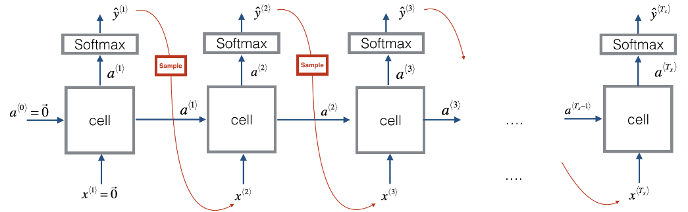

RNN: Recurrent Neural Networks
The neural n-gram language model we've seen earlier was trained using the a window-sized subset of the previous tokens. And this falls short with long sentences as where the contextual dependencies are longer than the window size. Now, we need a model that is able to capture dependencies outside the window. In other words, we need a system that has some kind of memory to save these long dependencies.
Here, we are going to talk about RNN or Recurrent Neural Network. Recurrent Neural Networks (RNN) are very effective for Natural Language Processing and other sequence tasks because they can read inputs (such as words) one at a time, and remember some information/context through the hidden layer activations that get passed from one time-step to the next. This allows a uni-directional RNN to take information from the past to process later inputs. A bi-direction RNN can take context from both the past and the future.
But why we are going to use Recurrent Neural Network (RNN) and not the vanilla feed-forward type of neural networks?
-
First, the vanilla neural network has fixed input and output. But in applications like the ones above, it is required to have a flexible neural network architecture with different inputs and outputs. For example, a sentiment analysis application should have a flexible neural network that can deal with different sentence lengths.
-
The standard neural network losses an important criterion which is sharing information between different layers. Unlike the RNN that can connect to any neuron in any layer. This criterion is called “Cyclical Connections”.
History Background
Here, we are going to talk about how the RNN has evolved in the past few decades. The first wave of artificial neural networks started in the mid-1980s. After that wave, it became clear that feed-forward networks became are limited since they are unable to capture temporal dependencies, which are dependencies that change over time. Biological neural networks have recurring connections, so appling recurrence to artificial intelligence made natural sense.
The first time to add memory to neural networks were the TDNN or “Time Delay Neural Network” in 1989. Then after one year in 1990, Jeffrey Locke Elman created Elman’s Network or (Simple RNN). Then, Michael Irwin Jordan produces a network that is similar to Elman’s Network and called it “Jordan’s Network” … original!!
All these networks suffer from something called “Vanishing Gradients” which means that they can’t capture information with span more than 8 or 10 steps back. In the mid-1990s, Long Short-Term Memory, or LSTM for short, were invented to address this very problem. The key idea in LSTM was the idea that some signals can be kept fixed by using gates, and reintroduced or not. After than GRU or Gated Recurrent Unit was invented to optimize LSTM in 2014 by Kyunghyun Cho.
Types of RNN
There are different types of RNN:
- One-to-many RNN: This neural network is used when we have just one input and multiple outputs like Music Generation Application which has just one input like the genre of the music, and the output is a sequence of music notes.
- Many-to-one RNN: This neural network is used when we have many inputs and just one output like the sentiment analysis applications which have a sequence of sentences, and the output is a rate of one to five stars.
-
Many-to-many RNN: This neural network is used when we have many inputs and many outputs. And we have two types in these neural network:
-
When the input size is the same as the output size like in Word Embedding problem.
-
When the input size is different than the output size like in Machine Translation Applications which takes a sentence of a certain length and returns another sentence in another language which probably has different length.
-
Notes:
- At one-to-many RNNs, we take the output and insert it back as input. This operation is called “Sampling”.

- At machine translation RNN models, we divide the RNN into two parts, the first is the “encoder” part which takes the original sentence. The second part is the “decoder” part which returns the translated sentence. This architecture is called the “Autoencoding architecture”.
RNN Cells
As you can see, a recurrent neural network can be seen as the repetition of a single cell (RNN cell). The following figure describes the operations for a single time-step of an RNN cell. The basic RNN cell takes as input $x^{\left\langle t \right\rangle}$ (current input) and $a^{\left\langle t - 1 \right\rangle}$ (previous hidden state containing information from the past), and outputs $a^{\left\langle t \right\rangle}$ which is given to the next RNN cell and used to predict $y^{\left\langle t \right\rangle}$.
The RNN forward propagation consists of several operations:
-
Initialize $a$ vector that will store all the hidden states computed by the RNN. Also, initialize the "next" hidden state as $a_{0}$ (initial hidden state).
-
Start looping over each time step, your incremental index is $t$:
-
Calculate the cell operations.
-
Store the "next" hidden state in $a$ ($t^{th}$ position).
-
Store the prediction in $y$.
-
Pros & Cons
RNNs have several advantages:
-
They can process input sequences of any length.
-
They have some kind of memory as computation for step $t$ can (in theory) use information from many steps back.
-
The same weights are used for all different inputs which means that the number of learn-able parameters are reduced and that number doesn’t scale with the size of the data unlike the traditional language models.
But they also have some disadvantages:
- Computation is slow - because it is sequential, it cannot be parallelized.
In practice, it is difficult to access information from many steps back due to problems like vanishing and exploding gradients.
LSTM Cell
As we have mentioned before that a standard recurrent neural network will work well for short sentences, but it suffers from vanishing gradient problem. So, it works best when each output $y^{\left\langle t \right\rangle}$ can be estimated using mainly “local” context (meaning information from inputs $x^{\left\langle t^{‘} \right\rangle}$ where $t’$ is not too far from $t$).
LSTM stands for Long Short-Term Memory network. It was proposed in 1997 by Sepp Hochreiter and Jürgen Schmidhuber. Here, you will build RNN using LSTM cells which is a more complex than standard RNN model. It is better at addressing vanishing gradients as it is better remembering a piece of information and keep it saved for many time-steps. The following figure shows the operations of an LSTM-cell.
As you can see, the LSTM has a lot of modifications over RNN cell. In RNN cell, we had just two inputs ($x^{\left\langle t \right\rangle}$, $a^{\left\langle t - 1 \right\rangle}$) and there were no gates. In LSTM, there are three inputs ( input $x^{\left\langle t \right\rangle}$, cell state $c^{\left\langle t - 1 \right\rangle}$, and activation $a^{\left\langle t - 1 \right\rangle}$). The cell state here represents the long short-term memory of this architecture.
All these equations can be summarized into the following ones knowing that $\left\lbrack a^{\left\langle t - 1 \right\rangle},x^{\left\langle t \right\rangle} \right\rbrack$ means that the activating parameter of the previous time-step $a^{\left\langle t - 1 \right\rangle}$ is concatenated with the input vector $x^{\left\langle t \right\rangle}$:
\[c^{\left\langle t \right\rangle} = \Gamma_{f}^{\left\langle t \right\rangle} \ast c^{\left\langle t - 1 \right\rangle} + \Gamma_{u}^{\left\langle t \right\rangle} \ast tanh\left( W_{c}\left\lbrack a^{\left\langle t - 1 \right\rangle},x^{\left\langle t \right\rangle} \right\rbrack + b_{c} \right)\] \[a^{\left\langle t \right\rangle} = \Gamma_{o}^{\left\langle t \right\rangle} \ast tanh\left( Wc^{\left\langle t \right\rangle} \right)\]where
$\Gamma_{f}^{\left\langle t \right\rangle} = \sigma\left( W_{f}\left\lbrack a^{\left\langle t - 1 \right\rangle},x^{\left\langle t \right\rangle} \right\rbrack + b_{f} \right)$ (Forget Gate)
$\Gamma_{u}^{\left\langle t \right\rangle} = \sigma\left( W_{u}\left\lbrack a^{\left\langle t - 1 \right\rangle},x^{\left\langle t \right\rangle} \right\rbrack + b_{u} \right)$ (Update Gate)
$\Gamma_{o}^{\left\langle t \right\rangle} = \sigma\left( W_{o}\left\lbrack a^{\left\langle t - 1 \right\rangle},x^{\left\langle t \right\rangle} \right\rbrack + b_{o} \right)$ (Output Gate)
Now, let’s get into these three gates in more details:
-
Forget Gate:
- This gate controls how much of the information of the previous cell state $c^{\left\langle t - 1 \right\rangle}$ should be forgot or kept while calculating the current cell state $c^{\left\langle t \right\rangle}$.
-
$W_{f}$ are weights that govern the gate’s behavior and they are trainable.
-
The output vector $\Gamma_{f}^{\left\langle t \right\rangle}$ has values from $0$ to $1$ since it uses the sigmoid activation function. So, if one of the features of $\Gamma_{f}^{\left\langle t \right\rangle}$ is $0$ (or close to $0$), then it means that the LSTM should forget that piece of information in the corresponding component of $c^{\left\langle t - 1 \right\rangle}$ while calculating the value for $c^{\left\langle t \right\rangle}$. If one of the features is $1$, then it will keep the information.
-
Update Gate (Input Gate):
- Similar to the forget gate, this gate controls how much of the information of the current input state $\left\lbrack a^{\left\langle t - 1 \right\rangle},x^{\left\langle t \right\rangle} \right\rbrack$ should be used while calculating the current cell $c^{\left\langle t \right\rangle}$ state matter now.
-
$W_{u}$ are weights that govern the gate’s behavior and they are trainable.
-
The output vector $\Gamma_{u}^{\left\langle t \right\rangle}$ has values from $0$ to $1$ since it uses the sigmoid activation function. So, if one of the features of $\Gamma_{u}^{\left\langle t \right\rangle}$ is $1$ (or close to $1$), then it means that the LSTM should update that piece of information in the corresponding component of the input $\left\lbrack a^{\left\langle t - 1 \right\rangle},x^{\left\langle t \right\rangle} \right\rbrack$ while calculating the value for $c^{\left\langle t \right\rangle}$. If one of the features is $0$, then it won’t use this feature.
-
Output gate:
- This gate controls how much of the information of the current cell state $c^{\left\langle t \right\rangle}$ should be used for the output/activation.
-
$W_{o}$ are weights that govern the gate’s behavior and they are trainable.
-
The output vector $\Gamma_{o}^{\left\langle t \right\rangle}$ has values from $0$ to $1$ since it uses the sigmoid activation function. So, if one of the features of $\Gamma_{o}^{\left\langle t \right\rangle}$ is $1$ (or close to $1$), then it means that the LSTM should use that piece of information in the corresponding component of the cell state $c^{\left\langle t \right\rangle}$ while calculating the value for the output $a^{\left\langle t \right\rangle}$. If one of the features is $0$, then it won’t use this feature.
Note:
\[\Gamma_{f}^{\left\langle t \right\rangle} = \sigma\left( W_{f}\left\lbrack c^{\left\langle t - 1 \right\rangle},a^{\left\langle t - 1 \right\rangle},x^{\left\langle t \right\rangle} \right\rbrack + b_{f} \right)\]
Some researchers have found out that the parameter $c^{\left\langle t - 1 \right\rangle}$ needs to be concatenated in the forget gate. So, instead of using just $x^{\left\langle t \right\rangle}$ and $a^{\left\langle t \right\rangle}$ in the forget gate, we need also to use $c^{\left\langle t - 1 \right\rangle}$ as shown in the following equation which could increase the accuracy. This is known as the “peephole connections”:
This link states some interesting facts about LSTM, give it a read!!!
GRU Cell
GRU stands for Gated Recurrent Unit. GRU was introduced in 2014 by Kyunghyun Cho as another solution to the vanishing gradient problem beside LSTM cell. The main objective behind creating GRUs is to create a simpler cell than LSTM without sacrificing the performance too much.
GRU's performance on certain tasks of music modeling and speech signal modeling was found to be similar to that of LSTM. GRUs have been shown to exhibit even better performance on certain smaller datasets. However, as shown by Gail Weiss & Yoav Goldberg & Eran Yahav, the LSTM is "strictly stronger" than the GRU as it can easily perform unbounded counting, while the GRU cannot. That's why the GRU fails to learn simple languages that are learnable by the LSTM.
He following The structure of GRU is like the following:
In GRU, we don’t have cell states as the one with LSTM. Here, we only have activation (hidden state). And GRUs have two gates (Update Gate, Reset Gate) unlike LSTM which have three gates. The main equations used with GRU are the following ones:
\[a^{\left\langle t \right\rangle} = c^{\left\langle t \right\rangle} = \left( 1 - \Gamma_{u}^{\left\langle t \right\rangle} \right) \ast c^{\left\langle t - 1 \right\rangle} + \Gamma_{u} \ast {\overset{\sim}{c}}^{\left\langle t \right\rangle}\] \[{\overset{\sim}{c}}^{\left\langle t \right\rangle} = tanh\left( Wx^{\left\langle t - 1 \right\rangle} + U\left( \Gamma_{r} \ast c^{\left\langle t \right\rangle} \right) + b_{c} \right)\]$\Gamma_{u}^{\left\langle t \right\rangle} = \sigma\left( W_{u}x^{\left\langle t - 1 \right\rangle} + U_{u}a^{\left\langle t - 1 \right\rangle} + b_{u} \right)$ (Update Gate)
$\Gamma_{r}^{\left\langle t \right\rangle} = \sigma\left( W_{r}x^{\left\langle t - 1 \right\rangle} + U_{r}a^{\left\langle t - 1 \right\rangle} + b_{u} \right)$ (Reset Gate)
Now, let’s get into these three gates in more details:
-
Update Gate:
- This gate controls the what is kept from previous hidden state $c^{\left\langle t - 1 \right\rangle}$ and is updated to the new candidate update ${\overset{\sim}{c}}^{\left\langle t \right\rangle}$ while calculating the current hidden state $c^{\left\langle t \right\rangle}.
-
$W_{u}$ and $U_{u}$ are weights that govern the gate’s behavior and they are trainable.
-
The output vector $\Gamma_{u}^{\left\langle t \right\rangle}$ has values from $0$ to $1$ since it uses the sigmoid activation function. So, if one of the features of $\Gamma_{u}^{\left\langle t \right\rangle}$ is $1$ (or close to $1$), then it means that the GRU should update that piece of information in the corresponding component of hidden state $c^{\left\langle t \right\rangle}$ using the update candidate ${\overset{\sim}{c}}^{\left\langle t \right\rangle}$. If one of the features is $0$, then update using the old value of the hidden state $c^{\left\langle t - 1 \right\rangle}$.
-
Reset Gate:
- This gate controls what parts of the previous hidden state should be used to compute the new hidden state $c^{\left\langle t \right\rangle}$.
-
$W_{r}$ and $U_{r}$ are weights that govern the gate’s behavior and they are trainable.
-
The output vector $\Gamma_{r}^{\left\langle t \right\rangle}$ has values from $0$ to $1$ since it uses the sigmoid activation function. So, if one of the features of $\Gamma_{r}^{\left\langle t \right\rangle}$ is $0$ (or close to $0$), then it means that the GRU should reset that piece of information in the corresponding component of $c^{\left\langle t - 1 \right\rangle}$ while calculating the value for $c^{\left\langle t \right\rangle}$. If one of the features is $1$, then it will keep the information.
Note:
As a rule of thumb, use LSTM cells in your model unless you care much about the size of the model or the memory needed. GRUs have fewer parameters to compute
Hyper-parameters
In sequence models, there are three main choices that we need to make when we want to build an RNN:
-
Choosing the cell type either standard RNN, GRU or LSTM. Now, it’s clear that both GRU and LSTM are both much better than standard RNN, but which one is even better? Actually, that depends on the task and the type of the dataset. According to this paper: “Visualizing and Understanding Recurrent Networks” by Andrej Karpathy, both LSTM and GRU were tested on two datasets: in the first dataset, GRU was better in all used sizes and in the second, GRU was better in some sizes and worse in other. So, when creating your own model, you should try both.
-
Choosing number of layers that we need to stack. And in the same paper, the number of layers stacked together is the best at two layers and when increasing it to three layers, it gets mixed results. So, when creating your own model, you should try using two and three layers. When creating advanced sequence models like CTC, we usually use five or even seven layers often with the use of LSTM cells.
-
And in case of using word embedding, then another hyper-parameter is added which is the embedding size. Experimental results in this paper: “How to Generate a Good Word Embedding?” have shown that the larger the word embedding is, the better; at least we reach the size of $200$. So, we should try different sizes starting from $50$ till $200$ or $300$ as google did in this paper: “Distributed Representations of Words and Phrases and their Compositionality” or even $500$.
In the following table, we are going to see different RNN architectures on different tasks:
| Task | Cell | #Layers | Layer Size | Embedding Size | Source |
|---|---|---|---|---|---|
| Speech Recognition (500K vocabulary) | LSTM | 7 | 1000 | - | paper |
| Speech Recognition (82K vocabulary) | LSTM | 5 | 600 | - | paper |
| Speech Recognition (small vocabulary) | LSTM | 1, 3, 5 | 250 | - | paper |
| Seq2Seq (160K → 80k) | LSTM | 4 | 1000 | 1000 | paper |
| Image Captioning | LSTM | - | 512 | - | paper |
| Image Generation | LSTM | - | 256, 400, 800 | - | paper |
| Question Answering | LSTM | 2 | 500 | 300 | paper |
| Text Summarization (119K → 68K) | GRU | - | 200 | 100 | paper |
Gradient Clipping
Recall that our loop structure usually consists of a forward pass, a cost computation, a backward pass, and a parameter update. Before updating the parameters, we will need to perform gradient clipping when needed to make sure that your gradients are not "exploding” (taking on overly large values).
So, we will implement a function that takes in the gradients and returns a clipped version of gradients if needed. There are different ways to clip gradients; we will use a simple element-wise clipping procedure, in which every element of the gradient vector is clipped to lie between some range $\left\lbrack - N,N \right\rbrack$.
def clip(gradient_lst, max_value):
... for gradient in gradient_lst:
... np.clip(gradient, -max_value, max_value, out= gradient)
... return gradient_lst
If you want to use it on our variables, we can do like so:
dWax, dWaa, dWya, db, dby = clip(dWax, dWaa, dWya, db, dby, 10)
Here, we provided the max_value as $10$. If any component of the gradient vector is greater than $10$, it would be set to $10$; and if any component of the gradient vector is less than $- 10$, it would be set to $- 10$. If it is between $- 10$ and $10$, it is left alone.
Sampling
the Sampling is the process of use the output of a certain neuron as an input to the following neurons. It’s used with generative models where you need to generate such as language models. Let’s see how it’s done:
-
First, we input the usual $x^{\left\langle 1 \right\rangle}$ and $a^{\left\langle 0 \right\rangle}$, apply the activation function and get the output.
-
Now our first time stamp $y^{\left\langle 1 \right\rangle}$will have some max probability over possible outputs, so we choose a randomly sample according to the probabilities of the possible outputs using, for example, the numpy command np.random.choice.
-
Next we then go on to the second time step which is expecting $y^{\left\langle 1 \right\rangle}$ as input to the next time-step.
-
And so on…
Example, let's say that we are creating a language model. And after we sampled the first word, the first word happened to be “the”, which is very common choice of first word. Then we pass “the” as $x^{\left\langle 2 \right\rangle}$. And now we’re trying to figure out what is the chance of the second word given that the first word is “the”. Then we again use this type of sampling function to sample $y^{\left\langle 2 \right\rangle}$ and so on.